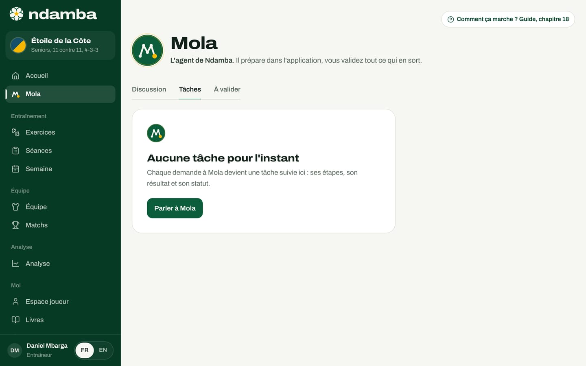
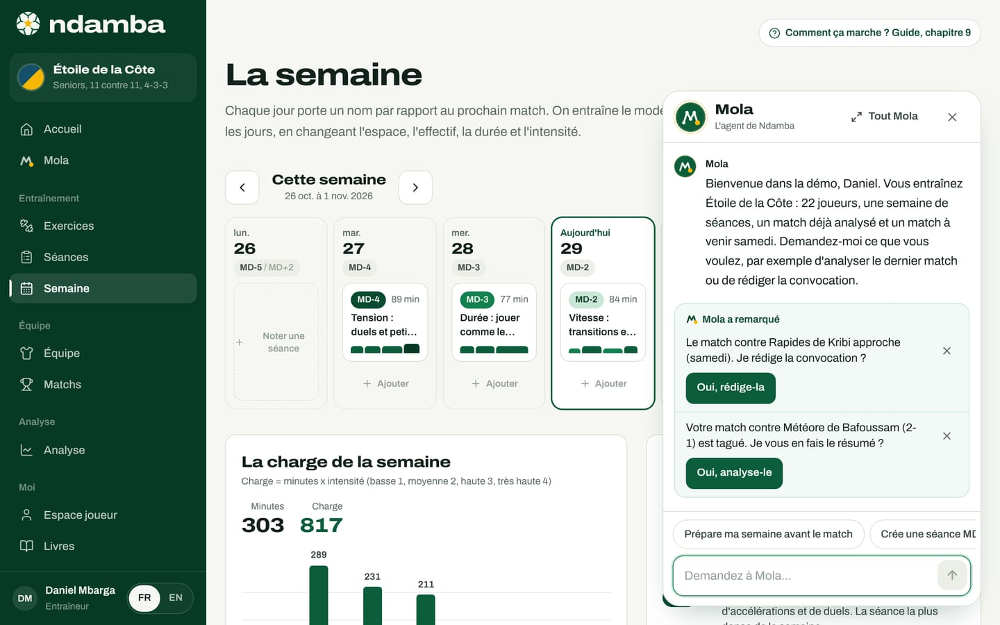
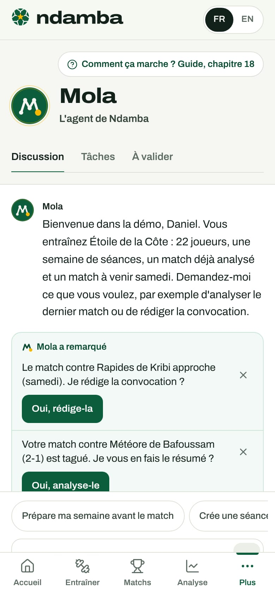

Mola, l’agent de Ndamba
Ce que Mola fait pour vous et comment lui parler : la discussion, les idées de « Mola a remarqué », les tâches, les validations (rien ne part sans vous), le bouton présent sur chaque page, la liste complète de ses actions, la façon dont il comprend, et dix phrases qui marchent.
11 min de lecture
En Afrique, beaucoup d’entraîneurs travaillent seuls, sans adjoint ni analyste. Le soir, il reste à préparer la semaine, écrire la convocation, mettre les dates dans le calendrier : ce travail mange le temps du football. Mola est l’agent de Ndamba. Vous lui dites ce que vous voulez avec vos mots, en français ou en anglais, et il le fait dans l’application, étape par étape, sous vos yeux. Une règle ne souffre aucune exception : rien ne sort de l’application sans votre accord. Mola prépare le message ou le fichier, et c’est vous qui l’envoyez.
Où trouver Mola
- Dans le menu, juste sous Accueil, touchez Mola. Sur téléphone, touchez Plus, puis Mola.
- Sur chaque page, le bouton rond de Mola attend en bas à droite (voir plus bas), sauf sur la page Mola et pendant le direct, où l’écran reste au match.
- La conversation de bienvenue, à la création de votre espace, est déjà Mola (chapitre 5).
La page s’ouvre sur l’avatar de Mola et cette phrase : « L’agent de Ndamba. Il prépare dans l’application, vous validez tout ce qui en sort. » Trois onglets suivent : Discussion, Tâches et À valider.
La discussion

Dans la démo, Mola accueille l’entraîneur : « Bienvenue dans la démo, Daniel. Vous entraînez Étoile de la Côte : 22 joueurs, une semaine de séances, un match déjà analysé et un match à venir samedi. » En bas, le champ Demandez à Mola… reçoit votre demande : Entrée envoie, Maj et Entrée passent à la ligne.
Sur ordinateur, la colonne Demandez par exemple propose huit phrases : touchez-en une, elle part comme si vous l’aviez tapée. Sur téléphone, ces idées sont des pastilles au-dessus du champ. Un joueur ou un parent reçoit des idées tournées vers les leçons et les livres (« Ouvre la leçon 1 »).
Quand Mola travaille, il annonce ce qu’il fait (« J’analyse votre match contre Météore de Bafoussam. »), puis les étapes se cochent une à une, comme une suite de passes. Le résultat suit : un texte court, les éléments créés et un bouton pour les ouvrir (Lire le rapport complet, Voir la semaine, Ouvrir la séance). Voir les 4 étapes permet de relire ce qui a été fait.
Quand Mola pose une question
S’il manque un détail, Mola pose une seule question, avec des réponses toutes prêtes en pastilles. Dans la démo, à « Organise un match », il demande « Contre quelle équipe jouez-vous ? » ; après « les Lions de Makepe », « Quel jour, et à quelle heure si vous la connaissez ? » ; après « dimanche à 10h », il programme le match du dimanche 1er novembre à 10:00. Si la réponse ne l’aide pas, il redemande une fois (« Pardon, je n’ai pas saisi. »), puis montre ce qu’il sait faire. « Non » annule. S’il faut d’abord une équipe, Mola demande son nom, la crée, puis reprend votre demande. Il propose aussi la suite, qu’un simple « oui » accepte : Oui, prépare la semaine après un match organisé, Prépare la semaine sur l’intention « Fixer » après une analyse.
« Mola a remarqué »
Sous la conversation, un encadré vert, Mola a remarqué, propose au plus deux idées tirées de vos vraies données, chacune avec son bouton :
| Ce que Mola remarque | Sa proposition | Le bouton |
|---|---|---|
| Vous n’avez pas encore d’équipe | « Vous n’avez pas encore d’équipe. Je la crée avec vous ? » | Oui, créons-la |
| Le prochain match est dans deux à six jours et aucune séance n’est prévue de MD-4 à MD-1 | « Votre match contre … est … et la semaine est vide. Je prépare les quatre séances ? » | Oui, prépare la semaine |
| Le prochain match est dans quatre jours ou moins et la convocation n’a pas été préparée | « Le match contre Rapides de Kribi approche (samedi). Je rédige la convocation ? » | Oui, rédige-la |
| Le dernier match, joué il y a sept jours ou moins, est tagué et n’a pas encore été résumé | « Votre match contre Météore de Bafoussam (2‑1) est tagué. Je vous en fais le résumé ? » | Oui, analyse-le |
Le bouton lance l’action directement, sans retaper la phrase. La croix Masquer cette idée l’écarte pour la journée.
Les tâches
Chaque demande d’action devient une tâche, suivie dans l’onglet Tâches ; avant la première, il affiche « Aucune tâche pour l’instant » et le bouton Parler à Mola.


Des filtres trient la liste : Toutes, En cours, À valider, Terminées et Annulées. Chaque tâche porte un nom (Semaine préparée, Convocation, Analyse de match…), son statut (En cours, À valider, Terminé, Annulé ou Échec), votre demande datée, le résumé et le détail des étapes. Une tâche en attente affiche Valider.
À valider : « Rien ne part sans vous »
Avec Mola, deux choses seulement peuvent sortir de l’application : la convocation du match (WhatsApp, SMS ou e-mail) et un fichier calendrier (.ics). Pour elles, Mola prépare tout, puis s’arrête : « J’attends votre accord avant d’ouvrir quoi que ce soit ». La tâche passe À valider, et une pastille dorée compte les tâches en attente sur l’onglet et sur le bouton de Mola.

Envoyer la convocation du prochain match :
- Demandez « Envoie la convocation sur WhatsApp », touchez Oui, rédige-la sous « Mola a remarqué », ou Rédiger une convocation dans l’onglet À valider.
- Mola retrouve le match. Si vous avez modifié le texte de la convocation en préparant le match (chapitre 11), il reprend ce texte ; sinon il le rédige à partir de la composition : l’adversaire, le jour, l’heure, le stade, les titulaires, les remplaçants, et le rendez-vous « 45 minutes avant le coup d’envoi, avec les deux tenues, de l’eau et les protège-tibias ».
- La carte En attente de votre accord s’affiche : « Rien ne part sans vous. En approuvant, j’ouvre WhatsApp avec le message prêt : c’est vous qui choisissez le groupe et appuyez sur Envoyer. »
- Sous Envoyer par, choisissez WhatsApp, SMS, E-mail ou Copier, avec si vous voulez un Numéro (facultatif) ou une Adresse e-mail (facultatif). Sous Message, Modifier puis Terminer changent le texte.
- Touchez Approuver et ouvrir WhatsApp (ou Approuver et ouvrir les SMS, Approuver et ouvrir l’e-mail, Approuver et copier). Votre propre application s’ouvre avec le message prêt : à vous d’appuyer sur Envoyer.
Mola confirme : « C’est ouvert dans WhatsApp. Choisissez le groupe de l’équipe et appuyez sur Envoyer : je n’envoie jamais rien à votre place. » La tâche passe à Terminé. Si vous touchez Annuler, rien ne part : « C’est annulé, rien n’est parti. »
Pour le calendrier, la carte montre les Événements de la semaine, et Approuver et télécharger enregistre le fichier .ics à ouvrir dans votre calendrier.
Le bouton Mola sur chaque page


Le bouton rond de Mola reste en bas à droite de chaque page, au-dessus de la barre d’onglets sur téléphone ; une pastille dorée y compte les validations en attente. Touchez-le : une fenêtre s’ouvre sur la page, avec la même conversation. Tout Mola ouvre la page complète ; la croix ou Échap la referme.


Tout ce que Mola sait faire aujourd’hui
| Vous demandez | Mola le fait dans l’application | Ce qui sort, avec votre accord |
|---|---|---|
| Préparer la semaine | Crée les séances MD-4 à MD-1 avant le prochain match (ou le match nommé), orientées sur l’intention demandée ou, à défaut, sur celle du dernier rapport. Il n’écrase aucune séance, ne remplit pas les jours passés et laisse libres le jour d’un autre match et son lendemain. | Rien |
| Créer une séance | Construit une séance avec des exercices de la méthode, selon le jour (MD-4 à MD+1, ou Jeunes), l’intention et la durée. Une séance MD-3 sans date va sur le jour MD-3 du prochain match. | Rien |
| Organiser un match | Crée le match, propose une composition automatique dans le système de l’équipe et un capitaine. Il refuse de créer deux fois le même match et prévient si vous jouez déjà ce jour-là. | Rien |
| Ajouter des joueurs | Crée la fiche de un ou plusieurs joueurs, avec numéro et poste (milieu par défaut), et prévient si le numéro est déjà porté. | Rien |
| Créer une équipe | Crée l’équipe avec sa catégorie, son format et son système de départ, et l’active. | Rien |
| Rédiger la convocation | Reprend le message du prochain match, ou le rédige avec la composition. | Le message, par WhatsApp, SMS, e-mail ou copie |
| Exporter la semaine | Rassemble les séances et les matchs de la semaine. | Un fichier calendrier .ics |
| Analyser le dernier match | Calcule l’Indice, écrit ce qui marche et ce qu’il faut corriger, propose deux exercices. Vous pouvez nommer l’adversaire. | Rien |
| Proposer des exercices | Choisit les trois exercices les plus utiles pour une intention ou une compétence, adaptés à l’âge de l’équipe. | Rien |
| Ouvrir une Leçon du Ballon | Ouvre l’une des 40 leçons du roman, avec le lien vers son chapitre. | Rien |
| Ouvrir un livre | Ouvre Le Code Njangi ou le roman Le Ballon qui voyage, au chapitre demandé. | Rien |
Mola répond aussi aux salutations et aux remerciements. Sur les formules Gratuit et Joueur Premium, il s’arrête à cinq séances en tout. Une semaine s’arrête au quota (« L’offre gratuite compte 5 séances en tout : je me suis arrêté là. Coach Pro les rend illimitées. ») ; au-delà, il propose Coach Pro, en rappelant que « les livres et les 64 exercices restent ouverts à tous ».
Ce que Mola ne fait pas : il n’envoie jamais rien lui-même, il ne supprime rien, il ne modifie pas une séance existante, et il ne code pas les matchs à votre place. S’il ne reconnaît pas une demande, il le dit et montre ce qu’il sait faire.
Comment Mola comprend
Mola comprend en deux couches.
La première est un moteur de règles qui tourne dans le navigateur, sur votre appareil. Il lit le français et l’anglais, quelle que soit la langue de l’interface, et répond dans celle-ci. Il tolère les fautes de frappe et l’absence d’accents (« prepar ma semainne » est compris). Il reconnaît les jours (« samedi », « le 12 novembre », « 12/11 »), les heures (« 16h », « 4pm »), les codes de la semaine (« MD-3 », « J-2 »), les mots de la méthode (« contre-pression » donne l’intention Reprendre), les postes et les canaux. Une fois l’application chargée, ce moteur n’a besoin d’aucun réseau, ne coûte rien et répond tout de suite. Un fichier de tests automatiques le vérifie : 127 vérifications, toutes réussies le 29 octobre 2026.
La seconde couche est facultative : un modèle d’intelligence artificielle. Quand le serveur qui héberge Ndamba dispose d’une clé de l’API d’Anthropic, chaque nouvelle demande (pas les simples oui ou non) part aussi vers la fonction /api/mola, qui demande à un modèle Claude ce que le message veut dire, dans la même liste d’actions :
- Le modèle ne fait rien lui-même. Il interprète la phrase ; c’est le même code qui agit, avec les mêmes étapes et les mêmes validations. Sa réponse est vérifiée : seules les actions connues et les détails bien formés sont gardés.
- Le navigateur attend au plus 3,5 secondes. Sans réponse, les règles répondent seules ; après deux échecs, Mola laisse le modèle de côté pour la visite.
- Ce qui part vers le serveur : le texte du message (600 caractères au plus), la langue, la date du jour, le nom de l’équipe, sa catégorie, votre rôle, l’adversaire et la date du prochain et du dernier match. Ni les joueurs, ni les tags, ni les séances. La clé reste sur le serveur.
Sans clé, seul le moteur de règles répond, comme dans la version testée pour ce guide : toutes les réponses citées ici viennent des règles.
Dix phrases qui marchent
Toutes ont été essayées dans la démo club pro, le jeudi 29 octobre 2026, à deux jours du match contre Rapides de Kribi.
| Tapez | Ce que fait Mola |
|---|---|
| « Analyse mon dernier match » | Résume le match contre Météore de Bafoussam : « Njangi solide : 67,9 sur 100 », ce qui marche (le Contrôle), ce qu’il faut corriger (la Fixation), les exercices R02 et S04, et Lire le rapport complet. |
| « Prépare ma semaine avant le match » | Dans la démo : « Votre semaine est déjà prête : 2 séances avant ce match. Je n’ai rien écrasé. » Avant le match du mercredi 4 novembre, il crée MD-2 et MD-1 et ajoute : « J’ai laissé 2 jours libres : un autre match ou sa récupération tombe ces jours-là. » |
| « Crée une séance MD-3 pour progresser » | Crée « Durée : jouer comme le match », trois blocs, 62 minutes, fil rouge « Progresser ». Le jour MD-3 (mercredi 28) étant passé, il la date du jeudi 29 et le signale. |
| « Organise un match contre les Aigles samedi à 16h » | Programme le match du samedi 31 octobre à 16:00, compose l’équipe, et prévient : « Attention : vous jouez déjà contre Rapides de Kribi ce jour-là. » |
| « Ajoute Samuel Owona, numéro 9, attaquant » | Crée la fiche, n° 9, attaquant, et prévient que le numéro 9 est déjà porté par Serge Eyoum. |
| « Envoie la convocation sur WhatsApp » | Rédige la convocation du match contre Rapides de Kribi et l’envoie dans À valider. |
| « Exporte la semaine dans mon calendrier » | Prépare un fichier .ics avec les quatre séances et le match de la semaine, en attente de votre accord. |
| « Quels exercices pour mieux reprendre le ballon ? » | Propose T01 (Les cinq secondes), F06 (La défense de repos) et T06 (Attaquer puis défendre). |
| « Ouvre la leçon 7 » | « Leçon 7 : « Oser la passe qui traverse ». », avec le lien vers le chapitre 7 du roman. |
| « Ouvre le Code Njangi » | Ouvre le livre : « la méthode, les 64 exercices et l’Indice Njangi ». |
Et aussi : « Que peux-tu faire ? » donne la liste complète, et « séance J-2 de 60 min sur la contre-pression » crée une séance de vitesse de 60 minutes orientée sur Reprendre.